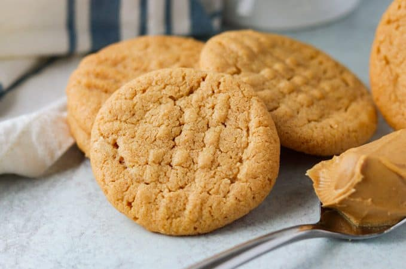

1980's Magic Peanut Butter Cookies

I won't lie, I found this recipe in a video from tik tok. As a connoisseur of peanut butter flavored goodies, I decided to give this recipe a shot.
To my delight, they were amazing and I wanted to share this recipe with others. If you're a peanut butter lover, like me, you won't want to pass
on this recipe.
Ingrdiants
- 1 cup Sugar
- 1 cup Creamy peanut butter
- 1 Large egg
Steps
- Preheat oven to 350°F.
- Prepare a baking sheet by lining it with parchment paper.
- In a medium bowl, mix the sugar, peanut butter and egg together until well incorporated
- Roll the dough into 1-inch balls and place on the prepared cookie sheet.
Using the back of a fork, make a criss-cross pattern on each cookie.
- Bake for 12 minutes.
- Allow to cool on the baking sheet for a minute or two before transferring to a wire rack.